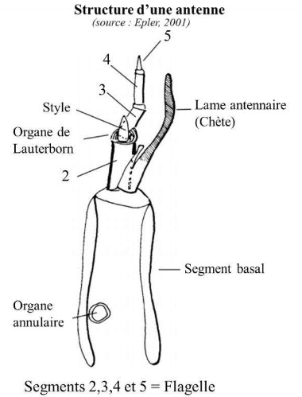
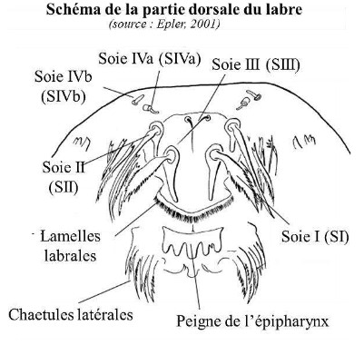

| Antenne |
n.f. Organe sensoriel pair inséré
dorsalement sur la capsule céphalique et constitué
d’une succession d’articles. Généralement très
mobiles, les antennes sont composées d’un article
basal, d’une lame antennaire et d’un flagelle
constitué d’un certain nombre d’articles parfois
fusionnés. |
 |
| Apex |
n. m.. Extrémité. |
|
| Apical |
adj. Situé à l'apex. |
|
| Apotome frontal |
n.m. Plaque allongée
au centre du dos formée par de sutures qui, dans la
plupart des taxons se diviseront et laisseront
émerger la pupe. Si le clypeus est fusionné à
l'apotome, il est appelé l'apotome fronto-clypeal. |
|
| Appendice M |
n.m. Chez les Tanypodinae.
Plaque triangulaire non chitinisée souvent
ornementée d’une bande médiane rugueuse (=la
pseudoradula). Située dorsalement par rapport à la
ligula. |
|
| Chaetules latérales |
n.f. Lames
simples ou pectinées localisées sur chaque côté du
peigne de l’épipharynx. |
|
| Clypeus |
n. m. Sclérite céphalique dorsale,
antérieure à l'apotome frontal, portant la soie SIII. |
|
| Distal |
adj. Partie la plus éloignée de la racine
du membre /organe. |
|
| Epipharynx |
n.m. Face interne membraneuse
du labre sur laquelle sont présentes des soies, des
lamelles ou des épines. Il a un rôle sensitif et
nutritionnel. |
|
| Flagelle |
n.m. Partie distale pluriarticulée
des antennes. |
|
| Flagelle |
n.m. Partie distale pluriarticulée
des antennes. |
|
| Hypopharynx |
n. m. Organe linguiforme
formant la bordure inférieure du pharynx sur le
plancher de la cavité buccale et portant l’ouverture
du conduit salivaire commun. L’hypopharynx peut
devenir un organe perforant (Culicidés). |
|
| Labium |
n. m. Organe complexe formant le
plancher de la bouche chez les insectes
mandibulés, derrière les maxilles et en opposition
avec le labre. Lèvre inférieure de la bouche. Le
labium est constitué de plusieurs éléments :
Submentum, Postmentum, Prémentum, Glosse,
Paraglosse et Palpe labial. |
|
| Labre |
n. m. Lèvre supérieure impaire de la
bouche des insectes, il couvre la base des
mandibules et forme la voûte de la cavité buccale
des insectes. |
|
| Lancéolé |
adj. En forme de fer de lance. |
|
| Latéro-dorsal/ventral |
dj. situé de
chaque côté (latéralement) de la face
dorsale/ventrale. |
|
| Lauterborn (organe) |
n.m. Appendice
sensitif présent sur l’apex du 2ème segment
antennaire (parfois sur d’autres). Peuvent être
sessiles ou pédonculés. |
|
| Ligula |
n.f. Présente seulement chez les
Tanypodinae, c’est une pièce buccale
distinctement développée et sclérifiée, en forme de
« fourchette ». La ligula correspond à la fusion de
la partie antérieure du labium (prémentum ou
dorsomentum) avec les glosses. Latéralement elle
porte deux paraligulas dentées. La ligula et les
mandibules agissent comme des pinces pour saisir
la proie et l’engloutir dans le pharynx. |
|
| Maxille |
n.f. Pièce buccale, présente par paire,
située dans le plan dorso-ventral et localisée juste
après les mandibules. Elles permettent de
maintenir et de triturer les particules alimentaires. |
|
| Mandibule |
n. f. Pièce buccale, présente par
paire, la plus dorsale des pièces mobiles de
l’appareil buccal. Elles sont, dans de nombreux
ordres, dures et cornées et reliées à des muscles
puissants. Placées devant la bouche, elles
permettent à l’insecte de saisir et de broyer. Les
mandibules présentent une dent apicale et un
nombre variable de dents internes (souvent 2-3),
parfois une ou plusieurs dents dorsales. Trois soies
ou groupes de soies peuvent être identifiés : le
peigne mandibulaire : qui a la forme de peigne
situé sur la surface subapicale, la soie subdentale
sur le mola interne et la soie interne, basale, en
forme de branche, souvent localisée sur la surface
mandibulaire interne. Les mandibules peuvent être
falciformes chez les Tanypodinae ou plus larges
chez les autres sous familles. |
|
| Mentum |
n. m. Le mentum est une pièce
sclérifiée médioventrale de la capsule céphalique
correspondant à la partie postérieure du labium
(lèvre inférieure), nommé aussi post-mentum ou
ventromentum. Il comporte presque toujours des
dents. Latéralement il peut s’étendre en plaques
ventromentales striées ou non. Chez les
Tanypodinae, le ventromentum est transparent,
parfois orné médialement de rugosités constituant
une pseudoradula. Chez les Tanypodinae c’est la
partie antérieure du labium (prémentum ou
dorsomentum) qui est sclérifiée et dentée et qui
prend alors le nom de Ligula (voir sa définition). |
|
| Mola |
n. f. Partie basale du bord concave de la
mandibule, épaissie, saillante ou mamelonnée. |
|
| Palpes |
n.m. Petits appendices des pièces
buccales, portant souvent les organes sensoriels du
toucher, du goût et de l'odorat. (Palpes maxillaires,
labiaux…). |
|
| Parapode antérieur |
n.m. Appendice
locomoteur charnu, non segmenté (« fausses pattes
») qui porte des griffes et localisé ventro-
latéralement sur le premier segment thoracique. |
|
| Pièces buccales |
n. f. Les pièces buccales
ou « trophi » comprennent le labre, les
mandibules, les maxilles, le labium,
l'hypopharynx. |
|
| Pectiné |
adj. En forme de peigne. |
|
| Pédicelle |
n. m. Petit pédoncule. |
|
| Postéro- |
adj. Situé à la partie postérieure
(arrière). (Antonyme :Antero-) |
|
| Pseudopode |
n. m. Appendice non articulé en
forme de patte. (Synonymes : pattes abdominales,
parapodes, fausses pattes) |
|
| Prémandibules |
n.f. Localisées au niveau
de la surface ventrale du labre (épipharynx), les
prémandibules sont des appendices pairs, mobiles
portant une ou plusieurs dents apicales. Elles sont
munies ou non d’une touffe de soies appelée la
brosse prémandibulaire. Les prémandibules
peuvent être réduites, vestigiales ou manquantes
(Tanypodinae, Podonominae). |
|
| Procercus |
n.m. Protubérance, présente par
paire dorsalement sur le dernier segment
abdominal et portant un nombre variable de soies. |
|
| Proximal |
adj. Partie qui est le plus près du
corps, du centre d'un organe, de l'origine d'une
structure ou du point d'attache d'un membre au
tronc. |
|
| Rhéophile |
adj. Organisme inféodé aux
zones de courant. |
|
| Segment basal |
n.m. Segment à la base de
l’antenne. Sur la paroi du segment basal il peut y
avoir un organe sensoriel circulaire : l’organe
annulaire. |
|
| Socle antennaire |
n.m. Extension de la
face dorsale de la capsule céphalique formant une
protubérance sur laquelle s’insère l’antenne chez
certains groupes de Chironomidae (Tanytarsini). |
|
| Soie labrale |
n.f. Organite sensoriel situé
antérieurement sur le labre, au nombre de quatre
paires numérotées de I à IV médio-latéralement.
Elles peuvent être simples, bifides, palmées,
plumeuses, frangées ou pectinées. |
 |
| Tubule anal |
n.m. Papilles anales
constituées par de simples évaginations
tégumentaires autour de l'anus. Dispositif
branchial (branchies « sanguines ») localisé sur le
9ème segment abdominal. Souvent 1 ou 2 paires
(exceptionnellement 3). Ce complexe peut être
complété, chez certaines larves, par une paire de
papilles courtes insérées au niveau du 7e segment
abdominal et/ou par 1 ou 2 paires assez longues sur
le 8e segment abdominal. |
|
| Vestigial |
adj. Ce dont il ne reste que des
traces, réduit ou rudimentaire, peu ou pas
développé. Un organe vestigial qualifie
fréquemment un organe peu développé souvent
non fonctionnel qui n'est qu'un vestige |
|
|
|
|